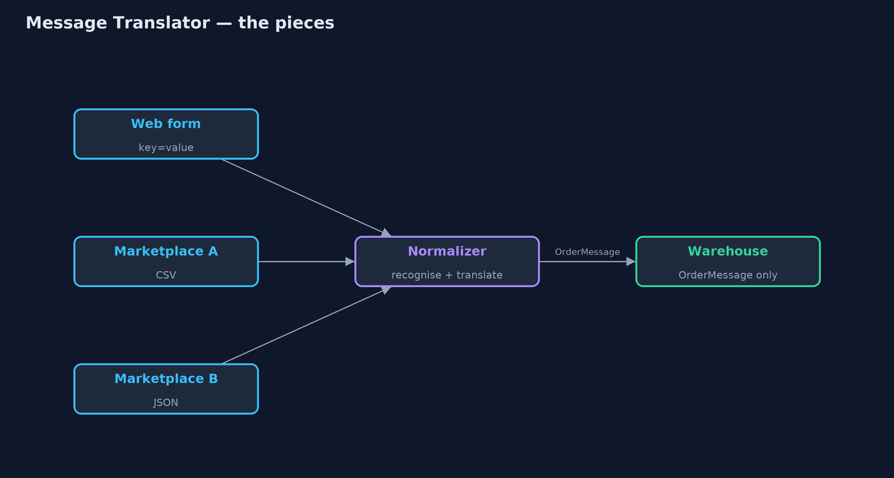
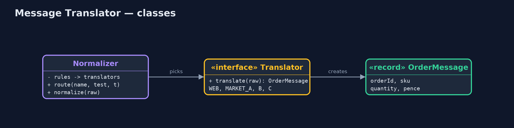
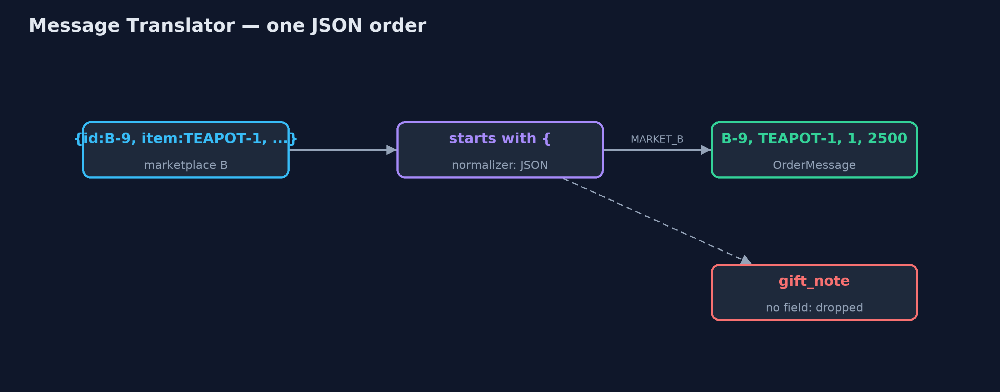
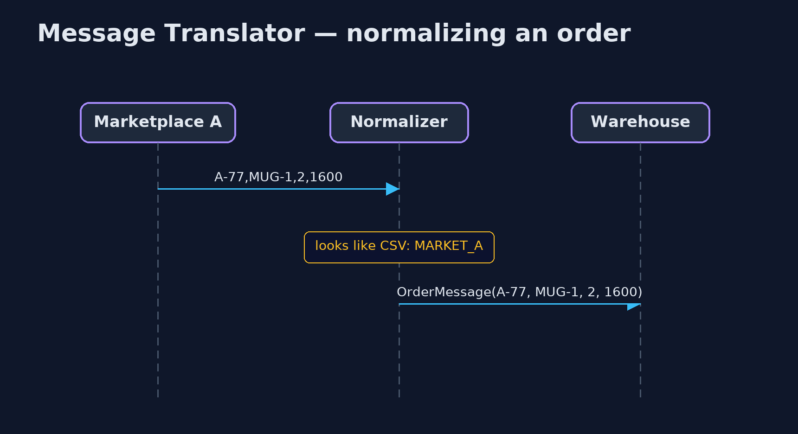

Message Translator / Normalizer Pattern
src/main/java/com/jk/explore/translator/
├── MessageTranslatorDemo.java The five acts: the warehouse reads every format, translators, the normalizer, a new marketplace, and the bill
├── Normalizer.java Recognises which format an incoming message is in and sends it to the matching translator
├── OrderMessage.java The canonical order: the one shape the warehouse understands, whatever the order came from
├── Translators.java The pattern: one small translator per incoming format, each turning its format into the canonical OrderMessage
└── Warehouse.java The warehouseTranslate each incoming format into one canonical message at the edge, with one small translator per format and a normalizer that picks the right one, so the rest of the system speaks only one language.
Message Translator is one of the Enterprise Integration Patterns. When systems that send you messages each use their own format, a translator converts one format into the format your system uses. The Normalizer builds on it: it looks at each incoming message, recognises which format it is in, and passes it to the matching translator, so everything that comes out is in one canonical shape.
The code behind the normalizer, here a warehouse, then only ever deals with one kind of message. Adding a new sender means adding one translator.
The idea in everyday terms
Think of an international meeting with interpreters. Each delegate speaks their own language, and an interpreter for each language turns it into the one working language of the meeting. When a new country joins, you hire one more interpreter; nobody else has to learn anything. But jokes and turns of phrase that have no equivalent in the working language are often lost.
The scenario
The online store takes orders from its own web form and from two marketplaces. The web form sends key-value text, marketplace A sends CSV, marketplace B sends JSON with its own field names. The warehouse parsed all three formats itself, and when a third marketplace arrived with XML, the warehouse could not read its orders.
Run
./gradlew runThe demo tells the story in 5 acts, each printing exact numbers that the tests check:
| Act | What it shows |
|---|---|
| 1. The warehouse reads every format | The warehouse parses web form, CSV and JSON itself; a new XML marketplace fails: warehouse cannot read this order. |
| 2. Translators | One translator per format; each produces the same OrderMessage: W-1 kettle £30.00, A-77 2 mugs £16.00, B-9 teapot £25.00. |
| 3. The normalizer | The normalizer recognises each format and picks its translator; the warehouse only sees OrderMessage. |
| 4. A new marketplace | Marketplace C's XML gets one translator and one rule; the warehouse picks C-5's kettle unchanged. |
| 5. The bill | Marketplace B's gift note "Happy birthday, Mum" is lost: the canonical order has no field for it. |
Test
./gradlew test6 tests in DemoRunsTest, TranslatorTest. Every number the demo prints is asserted, and nothing depends on the clock, so every run gives the same result.
Technologies and versions
| Technology | Version | Used for |
|---|---|---|
| Java | 21 | the code (toolchain set in build.gradle) |
| Gradle | 9.2.1 (wrapper) | build and run, nothing to install |
| JUnit | 5.10.2 | the tests |
| videokit | repository tool | the narrated video and animation: Piper en_US-amy-medium, speed 0.8, longer pauses (the approved amy-slow voice) |
Learning Material
| Document | What it is for |
|---|---|
| Problem statement | the situation and what the project must show |
| Prerequisites | what you need to know first |
| Message Translator / Normalizer, explained | the acts in prose |
| Session guide | a one-hour lesson with exercises |
| Animated walkthrough | the acts step by step, narrated |
| Spec | what this project must be true of |
The pattern in one picture
Formats in, one message out.

Where each piece sits
Rules pick translators; translators make OrderMessages.

How the data moves
Field names mapped, pounds turned into pence, the gift note dropped.

Who calls whom, in order
Recognise, translate, deliver.

Video
video/message-translator-pattern-explained.mp4 (with .m4a audio and .srt subtitles) is built by video/build_video.sh. Rendered media is not committed.
What it costs
- Lost details. Marketplace B's gift note ("Happy birthday, Mum") has no place in the canonical order and disappears.
- The canonical model must grow. Every field someone needs has to be added to it, and to every translator.
- Translators to maintain. One per format, each changing whenever its sender changes.
When this is too much
With a single sender whose format you control, just agree on the format. And when senders' formats are nearly identical, one flexible parser may be simpler than a translator each.
Where you have already met this
- Apache Camel's data formats and
unmarshal, and Spring Integration transformers. - Canonical data models in enterprise integration.
- Adapters in payment and shipping integrations that map each provider's API to one internal model.
Where this sits
This project is in messaging-integration-patterns, next to Content Enricher, which adds to a message, and Content-Based Router, the routing idea the normalizer uses to pick a translator.